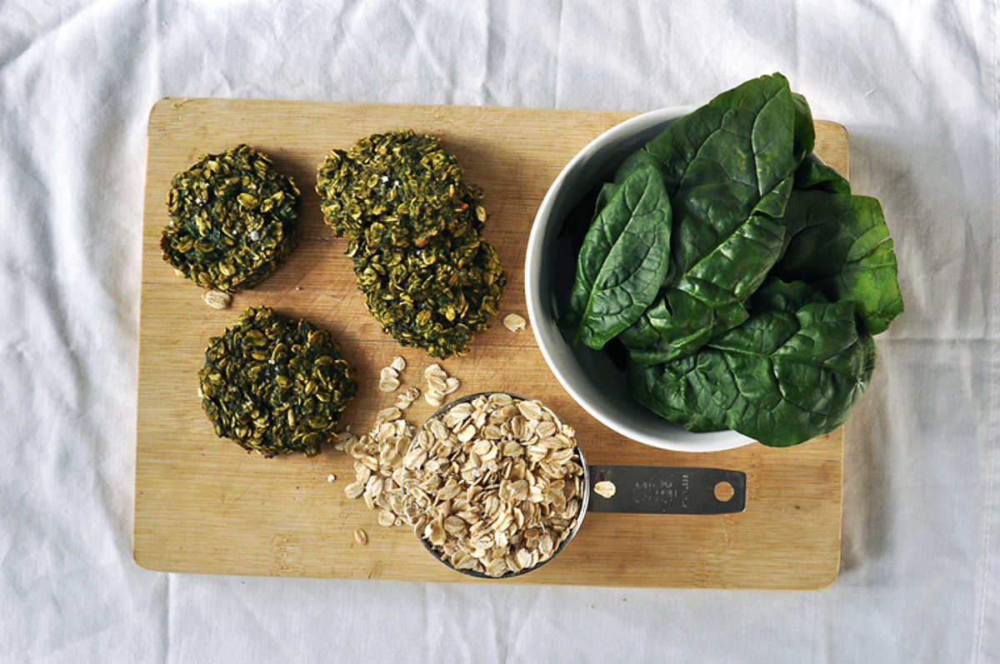

spinach oatmeal cookies
5 pieces — 20 minutes
When making green cookies, spinach is an obvious choice, it adds colour, nutrition, and doesn't alter the flavor of the food.
This recipe also doesn't take very long to make and does not require flour. It makes 5 small cookies, it's easy and doesn't make a mess. We never bake huge batches of desserts, but if you want more you can double or triple the recipe.
 spinach15 g
spinach15 g banana1
banana1 vanilla extract1.25 ml
vanilla extract1.25 ml rolled oats60 g
rolled oats60 g
cookies
- Preheat oven to 180 °C (350 °F)
- Purée 15 g (~1 handful) of spinach leaves with 1 whole banana.
- Stir in 1.25 ml (1/4 tsp) of vanilla extract and 60 g (1/2 cup) of rolled oats.
- Put 5 balls of dough onto a baking sheet lined with a baking mat (or parchment paper). Flatten the balls down into desired thickness.
- Bake for 12-15 minutes, let cool for 10 minutes before you move them off the baking mat.